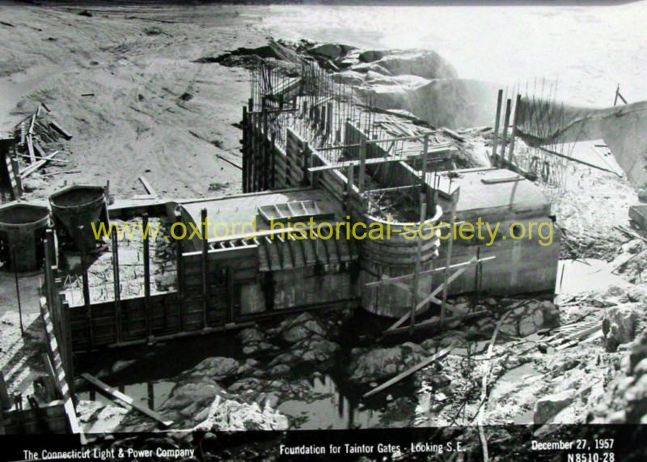

 1957_12-27_Foundation-for-Taintor-Gates_DSC03804_2012-PF.jpg
December 27, 1957 View of construction of the foundation for the Taintor Gates. Looking Southeast. (Photo Courtesy of Blakeslee Arpaia Chapman, Inc., Branford. Their parent company, C. W. Blakeslee & Sons built the Stevenson Dam in 1917.)
Previous
Thumbnails
Next